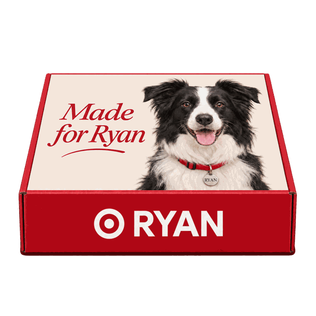

Your favorites, together.
Proposed selections from Target’s national brands plus owned brands such as Kindfull and Boots & Barkley. One place to discover, choose and replenish.
THE CASE FOR TARGET CIRCLE
You pick. We learn. They wag.
For Circle members who want familiar brands, personal touches and a new surprise every week.
Try Ryan’s four-week plan →
WHY TARGET COULD BE THE BEST FIT
Proposed selections from Target’s national brands plus owned brands such as Kindfull and Boots & Barkley. One place to discover, choose and replenish.
A premium red box personalized with your dog’s photo on every delivery. Inside: two treat packs, an appropriate chew and a toy.
Plan separate contents for each of the first four weeks. Preview optional recommendations from week five, with edit, skip and pause controls. Ratings could help refine a future live service.
A proposed member experience built around the Target shopping habit. Scan once to build a pet profile, plan four weekly boxes and preview a personalized cover. Membership is self-declared in this prototype.
One in ten boxes would include an extra collectible Bullseye plush pet toy. The regular toy stays in the box. A 10% chance per box is not a guarantee after ten.
THE COMPETITIVE LANDSCAPE
Competitors have real strengths. Target’s opportunity is the combination of product choice, personal packaging and a Circle-exclusive weekly ritual.
| Offer | What it does well | Choice & cadence | Our proposed reason to choose Target |
|---|---|---|---|
| BarkBox | Themed toys and treats; customization for size, allergies and assortment. | Monthly. Core items are a surprise; shoppers can choose extra add-ons. | Choose individual products for the first month, then opt in to weekly discovery across Target’s assortment. |
| BARK Super Chewer | Durability-focused toys for tougher play, with size and assortment options. | Monthly curated assortment; tougher toys are its specialty. | Use chewing style in the profile to guide toy choices, with a photo-personalized box. Durability must be validated; we do not claim better toughness. |
| Chewy Autoship | Convenient repeat delivery of chosen products with editable schedules and orders. | Customer-selected items and delivery frequency; designed for repeat purchases. | Add a discovery experience: learn from picks and ratings, rotate suitable surprises and build anticipation with Bullseye. |
| Target Run Dog Club PROPOSED | Target assortment + Circle membership + your pet’s photo + Bullseye. | Four weeks of guided picks, then optional automated weekly boxes. | A personal, collectible experience rooted in shopping customers already enjoy. |
This is a positioning proposal, not a proven ranking or live Target subscription. No lower-price, superior-quality or exclusivity claim is made about features not verified for competitors.
THE FIRST MONTH
Set recipient and contact details, a delivery address and the requested first delivery date. Preview four weekly dates, review the full plan, and download the box cover, plan and calendar. These are local planning choices, not carrier-confirmed deliveries.
The live Target catalog, Circle authentication, ratings, checkout and payment, fulfillment and carrier-confirmed delivery dates remain future integrations. This prototype saves a local preview; it does not place orders or start subscriptions.
Validate the concept with Circle members: compare repeat purchase, pet enjoyment, unwanted items, value perception and delivery reliability against their current solution. Weekly delivery also needs a workable price and shipping model.
Recommended campaign line: “Your dog. Your picks. A weekly box of Target joy.”
Open the demo, personalize Ryan’s example, plan four weekly boxes, and download the cover, plan and calendar.
Start the four-week preview →Reviewed November 5, 2026. Offer details can change. Competitor facts are based on their official pages; the Target proposition is a proposed future service.